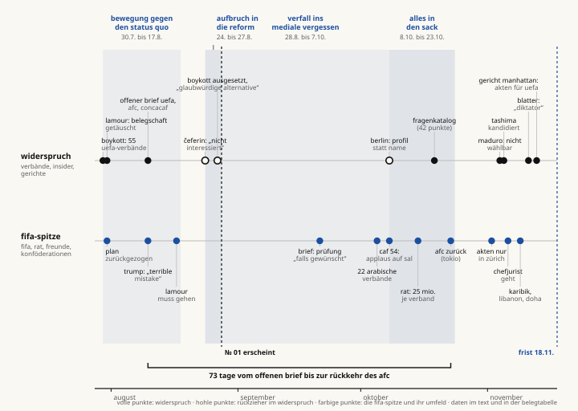
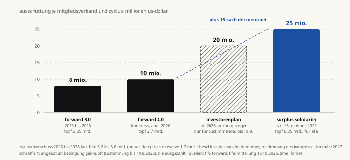
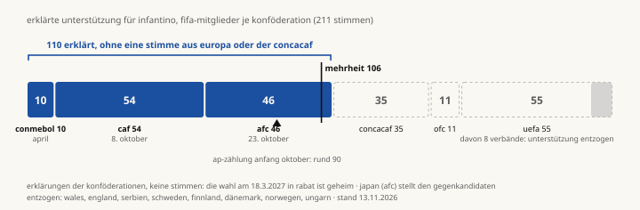
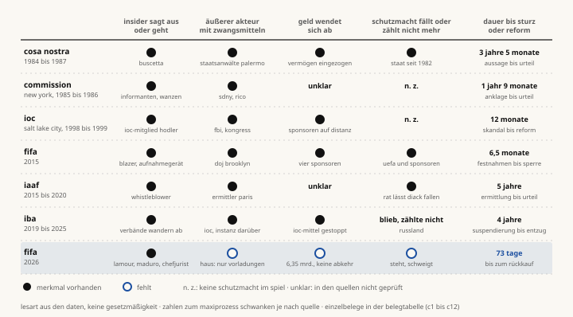

Was ein goldener Herbst! Sturz der FIFA! Ahh nein, doch nicht; alles beim Alten… Wenn die Kastanien liegen, sammeln wir und basteln austauschbare Persona. Bewegung gegen den Status quo, dann Aufbruch in die Reform, abgerundet durch Verfall ins mediale Vergessen. Einfach alles zusammengeharkt, alles in den Sack und wieder fest verschnürt. Am 28. August stand hier: „Zum ersten Mal seit zehn Jahren ist der Ausgang keine Formsache.“ Das hatte sage und schreibe 11 Wochen gehalten. Und der Aufstand vom August? Niedergeschlagen! Glück für die FIFA: Sie verfügt über eine der geächtetsten Gegenschlagstechniken, die die moderne Kriegsführung zu bieten hat: 25 Millionen Dollar je Verband, ohne Bedingung. Da kann man als potentiell „aufmüpfiges“ Mitgliedsland nur die Waffen strecken.
0rückblick für faule (nicht faul? dann lies hier)
Kurz für alle, die № 01 nicht gelesen haben (verständlich, 5.000 Wörter + vllt. sogar noch ein bisschen nachdenken dabei). Die These: Die FIFA unter Infantino ist mafiös; ohne Gewalt, ohne Strafregister. Loyalität wird gekauft, die Aufsicht ernennt sich selbst, entschieden wird ohne Protokoll, Gegenkandidaten scheitern vor der Wahl, jeder einzelne Schritt ist legal. Fünf Merkmale aus der Mafia-Forschung ergeben leider nicht die volle Punktzahl. Mit 85 von 100 Punkten aber trotzdem Klassenbester. Damit das nicht nur als reine Schimpftirade funktionieren sollte, habe ich versucht vier Bedingungen zu formulieren, die meine These widerlegen würden. Starten wir also damit in das Update.
1was hielt und was nicht
Die vier Bedingungen waren und sind weiterhin: unabhängig besetzte Kontrollorgane, Wahlen mit Gegenkandidaten, protokollierte Entscheidungen und Ausschüttungen, die nicht an der Person hängen.
Das sich selbst kontrollierende Kontrollorgan: Eine Arbeitsgruppe aus Vertretern der Konföderationen soll die Verbandsführung untersuchen. Ist eine externe Prüfung gewünscht, fragte Infantino seine Ratskollegen im September. Sowas stellt man natürlich als Frage in den Raum und nicht als Ankündigung; also als Ankündigung des Wandels. Und Gegenkandidaten? Ich glaube mich an zwei mit Hausmacht zu erinnern. Die sagten ab, bevor noch jemand zählen musste. Protokolliert wird im Modus des Hauses: Die Akten zum Investorenplan darf der Rat einsehen. In Zürich, vor Ort, unter Vertraulichkeitsauflagen. Und die Ausschüttungen hängen nicht weniger an der Person, sie hängen noch mehr an der Person. Die Erhöhung verkündet der Präsident persönlich auf dem asiatischen Kongress. Beschließen soll sie der Kongress, der ihn im März wählt. Drei von vier, und die vierte entscheidet der 18. November (damit das auch alles rechtens ist). Der Wettbewerb, den ich als eine der Bedingungen formuliert hatte, findet damit trotzdem nicht statt.
2vier phasen, elf wochen
Bewegung gegen den Status quo, 30. Juli bis 17. August. 55 europäische Verbände beschließen den Boykott aller FIFA-Wettbewerbe, die CONCACAF lehnt einstimmig ab. Kevin Lamour (operativer Geschäftsführer der FIFA) erklärt am 31. Juli, die Belegschaft sei über den Plan getäuscht worden. Wenn ihn das den Job koste, dann sei es so. Am 10. August unterschreiben UEFA, AFC und CONCACAF den offenen Brief: Führung im Fußball sei kein Besitz (ich hätte „Eigentum“ als besseres Wort empfunden). Das Haus antwortet nicht selbst. Am selben Tag schreibt Trump auf dieser schäbigen Plattform X; ne moment, Truth Social war’s (same same, but…): Die FIFA mache einen schrecklichen Fehler, wenn sie auch nur erwäge, Infantino zu ersetzen. Ohne ihn werde es nie wieder so erfolgreich und so profitabel. Es bleibt bis heute seine einzige Wortmeldung zur Personalie. Am 17. August bestätigt die FIFA das Ende von Lamours Arbeitsverhältnis, ohne Begründung.
Einschub: Was ich aber noch spannender finde an Trumps Aussage: der Blick auf Erfolg und Profitabilität. Rechtlich ist die FIFA ein Verein nach Schweizer Zivilgesetzbuch (Art. 60 ff. ZGB).16 „Erfolg“ kann man auslegen, wie man will. Bei Profitabilität ist das aber etwas anderes: Ein Verein darf wirtschaften, aber nicht dafür da sein; der Zweck muss ideell bleiben. Der Schutzpatron lobt an der FIFA also genau das, was sie laut Gesetz nicht zum Zweck haben darf. Das heißt in dem Fall leider, dass „kein Profitabilitätsstreben“ hier nur als Konstruktion stimmt. Gibt aber trotzdem noch mal extra Säure in den heißen Sanddornsaft.
Aufbruch in die Reform, 24. bis 27. August. Čeferin sagt in der britischen Sendung „The Rest is Politics“, er sei nicht interessiert. Drei Tage später setzt die UEFA den Boykott aus (provisorisch, für eine Saison), verspricht eine glaubwürdige Alternative und verlangt eine unabhängige Prüfung; eine Strafanzeige in der Schweiz sei in Vorbereitung, berichtet ESPN. Zwei Ankündigungen, kein Name. Einen Tag später erschien № 01. (Den Tag habe ich nicht gewählt. Ich erwähne ihn, weil ich ihn sonst erklären müsste.)
Verfall ins mediale Vergessen, September. Ein Brief Infantinos an den Rat und die 211 Verbände: Der Plan sei zu früh öffentlich geworden, und ob der Rat eine externe Prüfung wünsche, werde er ihn fragen. Sonst nichts. Kein Kandidat, keine Schlagzeile. Anfang Oktober zählt die AP rund 90 zugesagte Stimmen für Infantino, bevor überhaupt jemand gegen ihn antritt.
Alles in den Sack, 8. bis 23. Oktober. Anfang Oktober erklären 22 arabische Verbände ihre Unterstützung. Am 8. Oktober treffen sich die europäischen Verbandschefs in Berlin, um einen Kandidaten zu finden, und finden ein Anforderungsprofil. Immerhin! Am selben Tag lässt der CAF-Präsident auf der Kapverdeninsel Sal die 54 afrikanischen Verbände aufstehen: „Ich möchte, dass ihr alle aufsteht, und wir alle klatschen für Gianni.“ Dieselbe Abstimmungsform hatte 2024 die WM 2034 nach Saudi-Arabien gebracht; sie heißt jetzt Strategiekonferenz. Ebenfalls am 8. Oktober teilt Montagliani, lange als Kronprinz gehandelt, den Kollegen mit, er bleibe lieber bei der CONCACAF. Am 15. Oktober entschuldigt sich Infantino vor dem Rat. Per Videobotschaft, Fragen bitte schriftlich. Derselbe Rat erfährt, dass die Ausschüttungen je Verband von 10 auf 25 Millionen Dollar steigen, aus den Reserven. Im Juli waren es 20, gegen Unterschrift. Beschluss im Dezember, Segen des Kongresses im März. Am 23. Oktober sichert Scheich Salman in Tokio für den AFC die uneingeschränkte Unterstützung zu. Auf den offenen Brief vom August angesprochen, bittet er, die beiden Dinge nicht miteinander in Verbindung zu bringen. Vom Brief bis zur Rückkehr: 73 Tage. Mit Zinsen.

In № 01 steht, gekaufte Loyalität kündige fristlos. Dass sie ebenso fristlos zurückkommt, sobald die Ausschüttung stimmt, steht da nicht. Auch nicht, dass der Patron den Preis danach anhebt statt senkt. Die Meuterei hat ihm gezeigt, was Loyalität kostet: kontinuierliche Aufrüstung des Waffenarsenals.
3was hielt, gebündelt
Die bestätigten Punkte brauchen wenig Platz und waren erwartbar. Geld kommt bei der FIFA zuerst, also auch hier. Am 15. Oktober schrieb die FIFA in ihre Mitteilung, ihr Geld samt Reserven gehöre den 211 Verbänden.1 Alles schön gehört, aber Wiederholung hilft den teils vllt doch schon senilen Mitgliedern sich wieder zu erinnern. Den Satz kennt № 01 aus dem Wahlkampf von 2016, damals hieß er „Das Geld der FIFA gehört Ihnen“. Verändert hat sich seither nur der Preis. Infantino rechnet als Jurist natürlich selbst vor: von einer Million je Verband beim Amtsantritt auf 25 Millionen heute. Das Programm dafür heißt Surplus Solidarity, 6,35 Milliarden Dollar für 2027 bis 2030. Das sind mehr als das Doppelte des Plans vom April, bezahlt aus einem Zyklusüberschuss von 5,2 bis 5,6 Milliarden.1 Für einen Verband in Ozeanien ist das oft das gesamte Betriebsbudget.2 Wer da schweigt, rechnet mit und freut sich.

Die Kontrolle. Eine Arbeitsgruppe aus Konföderationsvertretern prüft die Verbandsführung, eingesetzt vom Rat, den sie prüfen soll.1 Ob Infantino ein viertes Mal antreten darf, prüft ein Gremium, das der Rat besetzt. Artikel 33 der Statuten erlaubt drei Amtszeiten; der Rat beschloss 2022, die erste zähle nicht, eine Begründung ist bis heute nicht veröffentlicht. Mein Vorschlag: Die zweite sollte auch nicht zählen. Wenn die erste nicht zählt und wir einen erfahrenen FIFA-Präsidenten brauchen, woher soll er die Erfahrung dann haben? Aus einer Amtszeit, die nicht zählt, garantiert nicht. Damit ist die zweite wieder eine erste. So wird ne runde Sache draus; Perpetuum mobile eben.
Miguel Maduro, früher Vorsitzender des Governance-Komitees, hält Infantino deshalb für nicht wählbar und spricht von einem Klima der Angst in den Verbänden. „Angst“ ist ein starkes Wort. Mich interessiert eher die Angst „wovor“. Angst vor Armut? Vor Bedeutungsverlust? Die Antwort steht ein paar Zeilen höher, beim Betriebsbudget aus Zürich. Beides.
FairSquare schrieb 52 von ihnen an. Keiner antwortete.3 Das Protokoll. Die Akten zum Investorenplan gibt es nur in Zürich, vor Ort, mit Vertraulichkeitsauflage; den Fragenkatalog der Europäer (42 Punkte, laut Reuters über 100 Fragen) nannte das Generalsekretariat in der gesetzten Frist nicht beantwortbar.4 Könnte Geld doch Ressourcen kaufen … z.B. ein externes Team von Juristen, die bei der Beantwortung unterstützen. Aber wenn man alles schon ausgegeben hat, kann man eben nichts mehr ausgeben; so ist das eben.
Die Arithmetik. № 01 hatte sie vorgerechnet: CAF und AFC kommen zusammen auf 100 der 211 Stimmen, die Mehrheit liegt bei 106. Im Oktober standen die 54 afrikanischen Verbände (Applaus auf Sal), die 46 asiatischen (Tokio) und die 10 südamerikanischen (seit April) erklärt hinter Infantino. Das sind 110, ohne eine einzige Stimme aus Europa oder der CONCACAF. Anfang Oktober, noch vor dem AFC, zählte die AP rund 90.5 Vorbehalt: geheime Wahl, eine Erklärung ist keine Stimme. Gesehen wird in diesem System aber nur die Erklärung.

Dann die zwei Sätze aus № 01, die der Herbst wörtlich nahm. Gekaufte Loyalität kündigt fristlos: Der AFC unterschrieb am 10. August den offenen Brief und stand am 23. Oktober wieder im Saal, beides solle man nicht in Verbindung bringen.6 Und der Sponsorenhebel, 2015 die schärfste Waffe gegen Blatter, blieb stumm. Kein Partner der FIFA hat sich zur Krise geäußert; die Times berichtete von Nachfragen hinter den Kulissen, mehr nicht. № 01 nannte Aramco die Gegenleistung, nicht den Sponsor. Dabei bleibt es.
Bewegung gibt es, nur nicht in Zürich. Ein Bundesgericht in Manhattan hat am 13. November den Versuch zweier FIFA-Töchter abgewiesen, die Beweisanträge der UEFA zu stoppen; die UEFA will von Thrive Capital und JPMorgan wissen, wie die Bewertung von 20 Milliarden zustande kam.7 Die europäischen Ligen haben ihre Beschwerde in Brüssel erweitert. Platini verhandelt am 8. Dezember in Marseille gegen die FIFA. Und in Washington übernimmt im Januar Jamie Raskin den Justizausschuss des Repräsentantenhauses, mit Vorladungsrecht.8 Das ist das Netz aus Jurisdiktionen, das № 01 als einzigen realistischen Weg beschrieb. Nur greift keiner dieser Fäden vor dem 18. März 2027. Für eine Schweizer Strafanzeige rechnet der Sportrechtler Antoine Duval in Jahren.9
4was nicht hielt, einzeln
Vier Dinge habe ich im August falsch gewichtet. Keines davon rettet Infantinos Kritiker. Alle vier erklären, warum der Sack so schnell zu war.
Erstens die Koalition. № 01 hatte ihre Realisierbarkeit nach dem August von 30 auf 50 angehoben, weil sie den Investorenplan gekippt hatte. Kippen und Aufstellen sind aber zwei Fähigkeiten. Zum Kippen reicht die Drohung mit Abwanderung: 55 Verbände, ein Boykottbeschluss, fertig. Zum Aufstellen braucht es einen Namen, und der kostet den, der ihn trägt. Albert Hirschman hat das 1970 sortiert: Abwanderung ist billig und wirkt sofort, Widerspruch braucht einen Adressaten, der zuhören muss. Der Kongress muss nicht. Dazu Mancur Olson: 55 Verbände haben ein gemeinsames Interesse an einem Kandidaten und 55 einzelne Interessen daran, nicht selbst der Erste zu sein. Čeferin sagte am 24. August ab, Montagliani am 8. Oktober, Berlin fand am selben Tag ein Anforderungsprofil. Lise Klaveness, seit Jahren die lauteste Gegenstimme, sagte der Sportschau: Norwegen beschäftige sich seit vier oder fünf Jahren damit, andere Länder erst jetzt. Deshalb fehle die Zeit.10 Und ein Detail, das die Koalition nicht gern erzählt: In Bangkok stimmten im Mai 2024 202 von 206 Delegierten für Statutenänderungen, die den Rat stärkten und die Reform von 2016 zurückbauten. Rechnerisch waren mindestens 46 der 55 UEFA-Verbände dabei.11 Der Aufstand von 2026 richtet sich gegen eine Architektur, die seine Träger mitgebaut haben. Der Wert geht zurück auf 30, oder die Achse wird geteilt: Veto 70, Reform 20.
Zweitens der Satz von der Formsache. Er war nicht falsch gedacht, er war falsch getaktet. Ich habe in Wochen gerechnet, das System rechnet in Zyklen. Die Präzedenzfälle hätten es mir sagen können: Vom ersten Pentito bis zum Urteil im Maxiprozess vergingen drei Jahre und fünf Monate; von den Festnahmen im Baur au Lac bis zur Sperre Blatters sechseinhalb Monate; vom Skandal in Salt Lake City bis zur Reform des IOC zwölf Monate.12 Alle drei mit Staatsanwälten oder einer Instanz darüber im Rücken. Ohne beides schließt sich das Fenster, sobald die nächste Ausschüttung angekündigt ist. Hier dauerte das 73 Tage.
Drittens Washington. № 01 nannte die Deckung geopolitisch und meinte den Präsidenten. Der hat sich seit dem 10. August nicht mehr zu Infantino geäußert, jedenfalls nicht auffindbar. Die Meldung, er werde „everything possible“ tun, stammte von einem anonymen Vertrauten und wurde dementiert.13 Dafür arbeiten die beiden anderen Gewalten gegen Zürich: ein Bundesgericht am 13. November, ein Repräsentantenhaus ab Januar. Für die Theorie ist das keine Kleinigkeit. Die einzigen Außenstehenden, die je einen Weltsportverband zu Reformen gezwungen haben, saßen in Washington: der Kongress mit der Anhörung Samaranchs im Dezember 1999, die Justiz mit der Anklage vom Mai 2015.12 Schutzmacht und möglicher Vollstrecker haben dieselbe Adresse, nur verschiedene Stockwerke. „Washington“ ist kein Akteur, sondern drei.
Viertens K4, die Ausschaltung von Konkurrenten. In № 01 steht der Wert bewusst bei 45, weil der schwerste Vorwurf (Platinis Anzeige) ungeprüft ist. Der Herbst liefert Material ohne Anzeige. Beide Kandidaten mit Hausmacht verzichteten, bevor jemand zählen musste. Ramon Vega kündigte an und ist nach den Regeln nicht wählbar, zu wenig Jahre im aktiven Fußball. Kozo Tashima kündigte am 5. November an, ohne Nominierung, mit Kontakt zu acht Verbänden und einer eigenen Schätzung von 20 bis 30 Prozent.14 Über die Wählbarkeit aller, des Amtsinhabers eingeschlossen, entscheidet ein Gremium, das der Rat besetzt. Wettbewerb findet statt, nur ohne Wettbewerber, genau wie das Raster es beschreibt. Die Kandidatenfrist endet am 18. November; was sie ergibt, trage ich hier nach, samt dem neuen Wert für K4.
Fünftens die Frage vom Ende von № 01, Sturz oder Patronwechsel. Weder noch. Dem Raster fehlte ein dritter Ausgang: der Rückkauf. Der Patron bleibt, die Klienten bekommen eine Erhöhung, und zwar eine höhere, als vor der Meuterei geboten war. 20 Millionen gegen Unterschrift im Juli, 25 ohne Bedingung im Oktober. Die Kaufmechanik, die № 01 als Geschäftsgrundlage von zehn Jahren beschrieb, hat im Aufstand ihren Preis nicht verloren. Sie hat ihn gefunden.
Was den fünf Punkten gemeinsam ist, zeigt der Vergleich mit den Fällen, in denen Systeme dieser Bauart tatsächlich fielen.

Cosa Nostra 1984 bis 1987: Buscetta sagt aus, Falcone hört zu, der Staat hat seit 1982 das Gesetz dafür; 475 Angeklagte, 338 Verurteilungen. New York 1985 bis 1986: Wanzen und Informanten, ein Gesetz von 1970, acht Verurteilte an der Spitze. Salt Lake City 1998 bis 1999: FBI, eine Anhörung im Kongress, Sponsoren auf Distanz; zehn IOC-Mitglieder weg, fünfzig Reformen, ohne ein einziges Strafurteil. FIFA 2015: ein Informant mit Aufnahmegerät, der Staatsanwalt von Brooklyn, vier Sponsoren, die Blatters Rücktritt verlangen; Sperre nach sechseinhalb Monaten. IAAF 2015 bis 2020: französische Ermittler, eine ausgelagerte Aufsicht ab 2017, ein Urteil 2020. IBA 2019 bis 2025: eine Instanz darüber, das IOC, entzieht die Anerkennung mit 69 zu 1 und erkennt den Konkurrenzverband an.12 Jedes Mal dieselbe Besetzung: Ein Insider liefert, ein Außenstehender mit Zwangsmitteln nimmt an, das Geld wendet sich ab, und wo es eine Schutzmacht gab, fiel sie oder zählte nicht mehr. Die Reihenfolge wechselt, die Besetzung nicht.
Die FIFA 2026 hat das erste Merkmal, und nur das. Insider gibt es: Der operative Geschäftsführer ging im August nach öffentlicher Kritik, der Chefjurist im November, ein Vizepräsident entzog die Unterstützung, der frühere Governance-Chef nennt den Amtsinhaber nicht wählbar.15 Was fehlt, ist der Staatsanwalt, der zuhört. Die Anzeige in der Schweiz ist nicht eingereicht, die französische wartet auf einen Untersuchungsrichter, das Repräsentantenhaus kann vorladen, nicht anklagen. Das Geld wendet sich nicht ab, es fließt stärker: 5,2 bis 5,6 Milliarden Überschuss, 6,35 Milliarden Programm. Und die Schutzmacht steht, wenn auch schweigend. Dass der Rückkauf 73 Tage brauchte, ist kein Zufall. So lange brauchte das Haus, um den Preis zu nennen.
5was bleibt
Bestätigt hat der Herbst die negative Hälfte der These: Ein System dieser Bauart fällt nicht von innen. Es muss ein äußerer Zwang her. Innerer Widerspruch allein wird zurückgekauft, mit extra Bonus. Die positive Hälfte (wie es fällt) bleibt eine Ableitung aus den Fällen anderer. Die Fäden dafür liegen: in Manhattan, in Brüssel, in Marseille, ab Januar in Washington. Keiner ist bis Rabat gezogen.
Die nächsten Messpunkte haben Daten. Am 18. November endet die Kandidatenfrist; die Liste kommt hier hinein. Am 23. November vergibt ein Kongress per Video die Frauen-WM 2031, einziges Gebot: die USA mit Mexiko, Costa Rica und Jamaika. Am 16. Dezember entscheidet der Rat in Doha über den Friedenspreis (jetzt muss man ihn ja regelmäßig vergeben; mir würden da direkt ein paar spannende Kandidaten einfallen) und über die 25 Millionen. Am 18. März 2027 wählt Rabat. Bis dahin liegt das Laub im Sack, fest verschnürt. Aufgemacht wird er in Rabat, zum Zählen.
·methodik und quellen
Prüfmaßstab für „bestätigt“ und „nicht bestätigt“ sind die vier Widerlegungsbedingungen aus № 01, Abschnitt 5, und die vorausschauenden Sätze der Abschnitte 6 bis 8, nicht die Punktwerte. Die Chronologie beruht auf Agenturmeldungen (AP, Reuters, AFP, dpa), der FIFA-Mitteilung zur Ratssitzung Nr. 37 und Berichten von Sportschau, Al Jazeera, ESPN und Telegraph; Stand der Verfahren 14.11.2026, für alle Beteiligten gilt die Unschuldsvermutung. Die Stimmenzählung summiert Erklärungen von Konföderationen, nicht Stimmen; die Wahl ist geheim. Der Vergleich der Präzedenzfälle ordnet sieben Fälle nach vier Merkmalen und ist eine Lesart der Daten, keine Gesetzmäßigkeit; Zahlen zum Maxiprozess schwanken je nach Quelle (474 bis 476 Angeklagte, 338 bis 360 Verurteilte). Belegtabelle mit 75 Datenpunkten, Quelle und Verlässlichkeitsgrad im Projektordner.